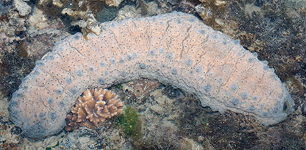
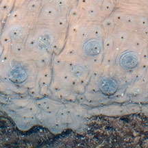
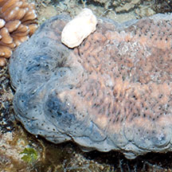
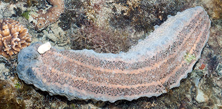
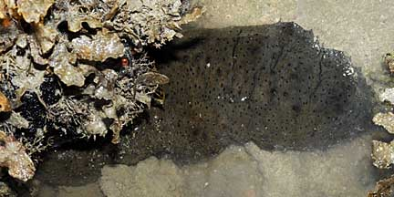
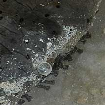
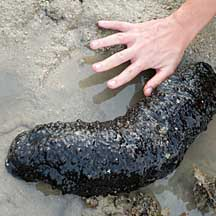
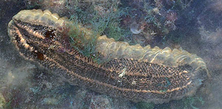

|
|
| sea cucumbers text index | photo index |
| Phylum Echinodermata > Class Holothuroidea |
| Herrmann's
sea cucumber Stichopus herrmanni Family Stichopodidae updated Apr 2020 Where seen? This large sea cucumber is sometimes seen among coral rubble on some Southern shores. It is also called the Curryfish as it is among the sea cucumbers that are edible and harvested for the restaurant trade. It was formerly known as S. variegatus. Elsewhere it prefers seagrass beds, rubble and sandy-muddy bottoms. Features: 20-30cm, up to 50cm long. Body hard heavy, squarish in cross-section blunt at the ends, with a wrinkled skin and distinct upper and underside. Small wart-like bumps in 2-4 rows along the sides of the body length. Colour uniform black, dark olive, brown to pale beige with dark brown to black spots scattered over the entire body. Elsewhere, also light mustard-yellow to orangey-brown or brown and olive green. Distinct flat underside, paler that upperside, with many tube feet appearing in three rows along the body length. Mouth facing downwards with 8-16 stout green feeding tentacles. The body wall disintegrates if the animal is held out of water for a long time. So please don't handle it. Baby cucumber home: Juveniles found commonly in shallow reef flat zones and later migrate to other zones. It reaches sexual maturity at 30cm and reproduces annually. Cucumber home: This sea cucumber is host to the pearlfish Carapus mourlani and Carapus homei. |
 Pulau Semakau, Aug 13 |
 |
 |
 Flat underside with three rows of tube feet. |
| Human uses: This is one of the
sea cucumbers whose body fluids are harvested in Malaysia for 'Air
Gamat', a local health tonic that believed to aid healing and other
ailments. According to Choo, in Pulau Langkawi, the processing industry
has depleted the resources of S. hermanni, which is now an
endangered if not an extinct species in the vicinity of the Langkawi
Islands. According to the IUCN Red List: "Although it is not one of the most important species (low value) for fishery purposes, it can may become more popular after the depletion of other species of higher commercial importance and value. Populations are estimated to be depleted and have declined by more than 60-90% in at least 50% of its range, as there is some refuge in deeper waters, and is considered over exploited in at least 40% of it range although exact declines are difficult to estimate." |
|
 Pulau Semakau, Aug 08 |
 Tube feet on the underside. |
|
| Herrmann's sea cucumbers on Singapore shores |
On wildsingapore
flickr
|
| Other sightings on Singapore shores |
 Pulau Semakau, Dec 08 Photo by Yvonne Yeoh courtesy of Eric Leong. |
 |
||
|
Links
References
|